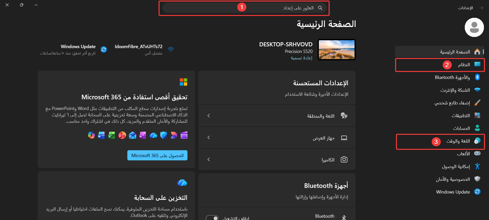
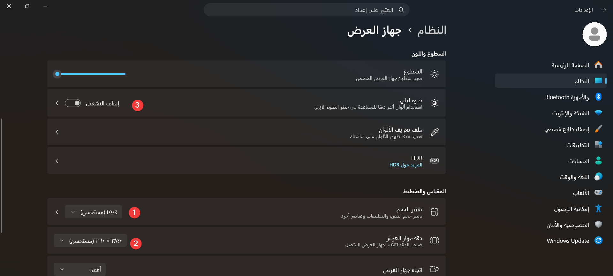
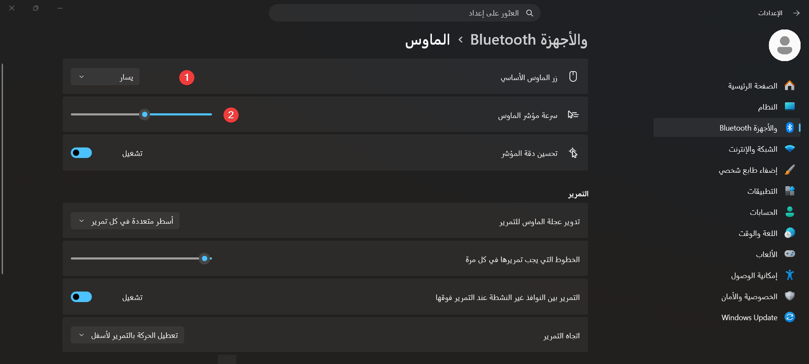
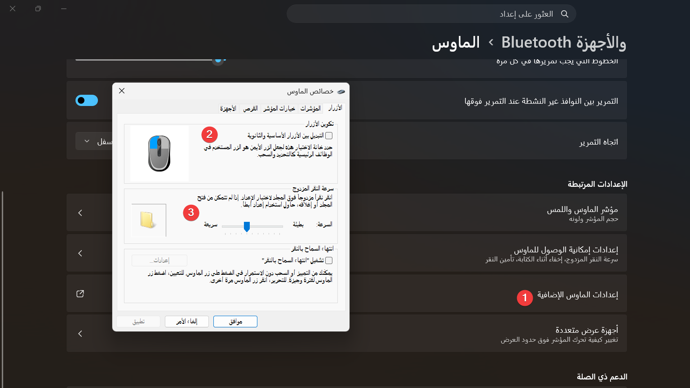
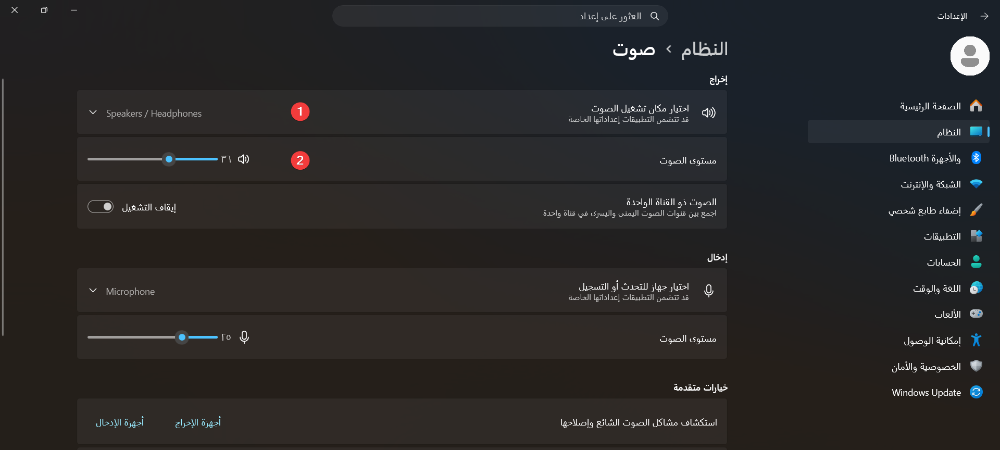

المستوى: السنة الأولى ثانوي (1AS)
المدة الزمنية: ساعة واحدة
في نهاية هذه الوحدة، يكون المتعلم قادرًا على أن:
| المرحلة | السؤال المركزي | ناتج التعلّم القابل للملاحظة |
|---|---|---|
| الانطلاق (5 د) | أين نذهب في الحاسوب عندما نريد تغيير شيء في النظام؟ | يذكر مسارين مختلفين للوصول إلى الإعدادات. |
| بناء التعلمات (35 د) | كيف نضبط الشاشة، الفأرة، الصوت، الوقت، اللغة، البرامج والحسابات؟ | ينفّذ سلسلة إعدادات على جهازه دون مساعدة. |
| التطبيق والتقويم (20 د) | كيف نهيّئ حاسوبًا مشتركًا بين عدة مستخدمين؟ | يُنتج حسابًا قياسيًا مضبوطًا ويشرح اختياراته. |
هذه الوحدة هي غرفة تحكم الحاسوب: كل ما لا تجده على سطح المكتب من تغييرات (ألوان، لغة، برامج، حسابات) تجده هنا. وكل تغيير تُحدثه يُحفظ في الجهاز ويؤثر على كل من يستعمله، لذلك نغيّر بوعي لا بتجريب عشوائي.
لوحة التحكم (Control Panel / Panneau de configuration) برنامج مدمج في نظام التشغيل بواجهة بيانية، تُعدّ مركز إعدادات الحاسوب: تسمح بعرض وضبط الإعدادات الأساسية مثل خصائص العرض، والفأرة، والتاريخ والوقت، واللغة، والبرامج المثبتة، وحسابات المستخدمين.
منذ Windows 8 ثم Windows 10، ثم بصورة كاملة في Windows 11، انتقلت معظم الإعدادات إلى تطبيق حديث اسمه الإعدادات (Settings)، بينما بقيت لوحة التحكم الكلاسيكية موجودة لكنها لم تعد المسار الرئيسي.
| وجه المقارنة | لوحة التحكم الكلاسيكية | تطبيق الإعدادات (Windows 11) |
|---|---|---|
| الشكل | نوافذ صغيرة متعددة (Dialogs) | نافذة واحدة بأقسام مرتبة |
| طريقة البحث | بحث داخل النافذة | مربع بحث موحّد في الأعلى |
| الاستعمال | إعدادات متقدمة وبعض الأدوات القديمة | معظم الإعدادات اليومية |
| الحالة اليوم | موجودة لكنها في طريق الإهمال | المسار الرسمي المعتمد |
معلومة: لا تزال لوحة التحكم ضرورية لبعض المهام المتقدمة، مثل: إلغاء تثبيت البرامج في النسخ القديمة، وإدارة الأجهزة (Device Manager)، وإعدادات الشبكة المتقدمة، ونافذة خصائص الفأرة الكلاسيكية.
| الطريقة | الخطوات |
|---|---|
| الاختصار السريع | Win + I |
| قائمة ابدأ | زر ابدأ ← الإعدادات (Settings) |
| قائمة النظام السريعة | Win + X ← الإعدادات |
| البحث | اكتب «الإعدادات» في مربع البحث ثم Enter |

مسار Windows 8.1 في المخبر: لا يوجد تطبيق إعدادات كامل كما في Windows 11، بل شريط جانبي اسمه إعدادات الكمبيوتر (PC settings) يُفتح بـ
Win + Cثم Settings، وبقيّة الإعدادات تُنجز من لوحة التحكم (Win + X← Control Panel).
هذا الجدول هو مرجعك خلال الحصة: العمود الثالث هو ما ستجده فعليًا على جهاز المخبر.
| الإعداد المطلوب | المسار في Windows 11 | المسار في Windows 8.1 (المخبر) |
|---|---|---|
| صفحة الإعدادات العامة | Win + I | Win + C ← Settings ← Change PC settings |
| العرض والدقة | النظام ← العرض | لوحة التحكم ← العرض |
| الفأرة | Bluetooth والأجهزة ← الفأرة | لوحة التحكم ← الفأرة |
| الصوت | النظام ← الصوت | لوحة التحكم ← الصوت |
| اللغة | الوقت واللغة ← اللغة والمنطقة | لوحة التحكم ← اللغة |
| التاريخ والوقت | الوقت واللغة ← التاريخ والوقت | لوحة التحكم ← التاريخ والوقت |
| إلغاء تثبيت برنامج | التطبيقات ← التطبيقات المثبتة | لوحة التحكم ← البرامج ← إلغاء تثبيت برنامج |
| الحسابات | الحسابات ← مستخدمون آخرون | إعدادات الكمبيوتر ← الحسابات |
| التحديثات | Windows Update | لوحة التحكم ← Windows Update |
مسارنا: الإعدادات ← النظام ← العرض.

هنا إعدادان يخلط بينهما كثير من المستخدمين، والفرق بينهما جوهري:
| الإعداد | ماذا يفعل؟ | متى نغيّره؟ |
|---|---|---|
| المقياس (Scale — يظهر في الواجهة العربية باسم «تغيير الحجم») | يكبّر العناصر (النصوص، الأيقونات، الأزرار) دون تغيير عدد النقاط | عندما تكون الكتابة صغيرة بالنسبة لحجم الشاشة |
| دقة العرض (Resolution) | يحدّد عدد النقاط (البكسل) المعروضة أفقيًا وعموديًا | عندما تظهر الصورة ضبابية أو غير ملائمة للشاشة |
قاعدة عملية: الدقة الموصى بها (Recommended) هي الخيار الصحيح في أغلب الحالات؛ وابدأ منها ثم كبّر المقياس إن كانت الكتابة صغيرة. لا تُنقص الدقة لتكبير النص، لأن الصورة تصبح ضبابية.
ومن خصائص العرض المفيدة:
مسار Windows 8.1 في المخبر: تغيير الدقة موجود في لوحة التحكم ← العرض ← تغيير دقة الشاشة، أما ضوء ليلي والوضع الداكن فغير موجودين في 8.1؛ لا تبحث عنهما في المخبر.
مسارنا: الإعدادات ← Bluetooth والأجهزة ← الفأرة.

أربعة إعدادات تكفي لتخصيص الفأرة:

مسار Windows 8.1 في المخبر: لا توجد صفحة الفأرة في إعدادات الكمبيوتر، بل تُفتح النافذة الكلاسيكية مباشرة من لوحة التحكم ← الفأرة. وهي نفس النافذة تقريبًا في Windows 7 و8.1 و10 و11، لذلك يمكنك استعمالها في المخبر بلا فرق يذكر.
جرّب على جهازك: هل مؤشر الفأرة يتحرك أسرع أم أبطأ من جهاز زميلك؟ لماذا؟ ثم أعِد الإعداد إلى القيمة الوسطى.
مسارنا: الإعدادات ← النظام ← الصوت.

تذكير مواطن: استعمل السماعات في المخبر ولا ترفع الصوت؛ مشاركة الآخرين في الفضاء نفسه جزء من احترام بيئة العمل.
مسار Windows 8.1 في المخبر: لوحة التحكم ← الصوت ← تبويب التشغيل (Playback) لاختيار جهاز الإخراج.
مسارنا: الإعدادات ← الوقت واللغة ← التاريخ والوقت.
مسارنا: الإعدادات ← الوقت واللغة ← اللغة والمنطقة.
Win + Space، أو Alt + Shift في الإعدادات الأقدم. لاحظ ظهور رمز اللغة (AR/FR) قرب الساعة.تحذير عملي: تغيير لغة العرض في حاسوب المخبر يغيّر واجهة كل التلاميذ. غيّر لغة الإدخال فقط (وهي ما تحتاجه للكتابة بالعربية أو الفرنسية)، واترك لغة العرض كما هي.
مسار Windows 8.1 في المخبر: لوحة التحكم ← اللغة ← إضافة لغة ثم نقلها إلى الأعلى، ولوحة التحكم ← التاريخ والوقت ← تغيير المنطقة الزمنية.
مسارنا: الإعدادات ← التطبيقات ← التطبيقات المثبتة (Installed apps).
.exe أو .msi) أو من متجر موثوق مثل Microsoft Store.Program Files، لأن بقايا الإعدادات والسجلات تبقى وتُبطئ الجهاز وقد تُعطّله.خطوات إلغاء التثبيت:
قاعدة أمنية: لا تثبّت برنامجًا من رابط مجهول أو من رسالة تطلب منك تسريع الجهاز أو تنظيفه؛ فمعظم البرمجيات الخبيثة تدخل من هنا. أثناء التثبيت، أَلْغِ تحديد أي برنامج إضافي يُقترح عليك.
مسار Windows 8.1 في المخبر: لوحة التحكم ← البرامج ← إلغاء تثبيت برنامج (Programs and Features)، ثم انقر بالزرّ الأيمن على البرنامج واختر إلغاء التثبيت.
حساب المستخدم هو مجموعة الصلاحيات التي تُمنح لشخص على حاسوب معيّن، مع مساحة عمل خاصة به: ملفاته ومجلداته وإعداداته وواجهته. الحاسوب الواحد يمكن أن يضمّ عدة حسابات، ولكل حساب ملفات لا يراها الآخرون افتراضيًا.
| النوع | الصلاحيات | لمن؟ |
|---|---|---|
| حساب المسؤول (Administrator) | تثبيت البرامج والأجهزة وإلغاؤها، تغيير كل إعدادات النظام، إنشاء حسابات الآخرين وحذفها وتغيير أنواعها | مالك الجهاز أو تقني المخبر |
| الحساب القياسي (Standard) | استعمال البرامج المثبتة والملفات الشخصية، وتغيير صورته وكلمة مروره، دون تعديل إعدادات النظام | التلاميذ، أفراد العائلة، مستخدمو الحاسوب المشترك |
| حساب الطفل (Child account) | حساب قياسي مرتبط بحساب مايكروسوفت للعائلة، مع حدود وقت الشاشة والمواقع | الأطفال في المنزل |
تغيّر مهم عن الكتاب المدرسي القديم: كان Windows 7 و8.1 يعرضان حساب الضيف (Guest / Invité)، وهو حساب بلا كلمة مرور. أزالته مايكروسوفت لأنه ثغرة أمنية: أي شخص يفتح الجهاز يجد كل شيء. بديله اليوم: حساب قياسي بكلمة مرور أو رمز PIN، أو تفعيل وضع الحاسوب المشترك (Shared PC).
| حساب مايكروسوفت (Microsoft account) | حساب محلي (Local account) | |
|---|---|---|
| ما هو؟ | بريد إلكتروني مرتبط بخدمات مايكروسوفت | حساب موجود على الجهاز وحده |
| الفائدة | مزامنة الإعدادات والملفات، OneDrive، استرجاع كلمة المرور | استقلال عن الإنترنت، خصوصية أكبر |
| في المخبر | غير مناسب للحسابات المشتركة | الأنسب لحسابات التلاميذ |
خطوات إنشاء حساب محلي: الحسابات ← مستخدمون آخرون ← إضافة حساب ← ليس لدي معلومات تسجيل الدخول ← إضافة حساب محلي، ثم تكتب اسم المستخدم وكلمة المرور وسؤال الأمان.
Win + L قبل مغادرة الجهاز، وهي عادة يجب أن تصبح تلقائية.مسار Windows 8.1 في المخبر: إعدادات الكمبيوتر ← الحسابات ← حسابات أخرى. وانتبه: 8.1 لا يزال يسمح بتفعيل حساب الضيف في لوحة التحكم؛ لا تستعمله ولا تُعِد تفعيله.
مسارنا: الإعدادات ← Windows Update.
مسار Windows 8.1 في المخبر: لوحة التحكم ← Windows Update ← البحث عن تحديثات.
مسارنا: الإعدادات ← الخصوصية والأمان.
هنا تتحكم في من يستطيع الوصول إلى موقعك وكاميرتك وميكروفونك، وفي البيانات التشخيصية التي تُرسل إلى مايكروسوفت. وفي القسم نفسه تجد أمان Windows (جدار الحماية ومكافح الفيروسات).
التفصيل الكامل في الوحدة 05: حماية الحاسوب، ويكفي هنا أن يعرف التلميذ أن الإذن قابل للسحب في أي وقت.
الوضعية: اشترت عائلتك حاسوبًا واحدًا. أخوك الصغير يريد أن يلعب ويبحث، وأنت تحتاج ملفاتك وبرامجك، وأبوك هو من يثبّت البرامج. المطلوب تهيئة الجهاز ليستعمله الجميع دون أن يُفسد أحد عمل الآخر.
العمل: فرديًا أو في ثنائيات — المدة: 15 دقيقة.
| المهمة | ما يجب إنجازه | مؤشر النجاح |
|---|---|---|
| 1 | تحديد نوع الحساب المناسب لكل فرد | جدول مكتمل مع تبرير لكل اختيار |
| 2 | إنشاء حساب قياسي تجريبي وحمايته برمز PIN | الحساب يظهر في «مستخدمون آخرون» برمز PIN |
| 3 | ضبط المقياس على القيمة الموصى بها وتشغيل ضوء ليلي | شرح الفرق بين المقياس والدقة شفويًا |
| 4 | إضافة لغة الإدخال العربية والفرنسية والتبديل بينهما | الكتابة تنتقل من AR إلى FR بـ Win + Space |
| 5 | ضبط المنطقة الزمنية GMT+1 وتفعيل المزامنة | تظهر (UTC+01:00) الجزائر |
| 6 | إلغاء تثبيت برنامج غير مرغوب فيه | البرنامج اختفى من قائمة التطبيقات |
تسليم: جدول أنواع الحسابات + لقطة شاشة واحدة لكل إنجاز (أو شرح شفوي عند تعذّر التصوير).
Program Files لإلغاء تثبيته؟قبل مغادرة الحصة، اكتب في دقيقة واحدة:
يستعملها الأستاذ لبداية الحصة التالية: يُجيب عن السؤال المتكرر ويصحّح المفهوم الخاطئ الشائع.
| المصطلح | العربية | الشرح المختصر |
|---|---|---|
| Control Panel | لوحة التحكم | مركز الإعدادات الكلاسيكي في نظام التشغيل |
| Settings | الإعدادات | التطبيق الحديث لإعدادات النظام |
| Scale | المقياس | تكبير عناصر الواجهة دون تغيير الدقة |
| Resolution | دقة العرض | عدد نقاط الصورة المعروضة |
| Night light | ضوء ليلي | تقليل الضوء الأزرق في المساء |
| Uninstall | إلغاء التثبيت | إزالة البرنامج وملفاته من النظام |
| Administrator | حساب المسؤول | حساب بصلاحيات كاملة على النظام |
| Standard user | حساب قياسي | حساب محدود الصلاحيات للاستعمال اليومي |
| UAC | التحكم في حساب المستخدم | نافذة الموافقة عند تغيير إعداد حساس |
| Windows Hello | — | الدخول بالوجه أو البصمة أو رمز PIN |
| Windows Update | تحديث Windows | خدمة تنزيل تحديثات النظام وأمانه |